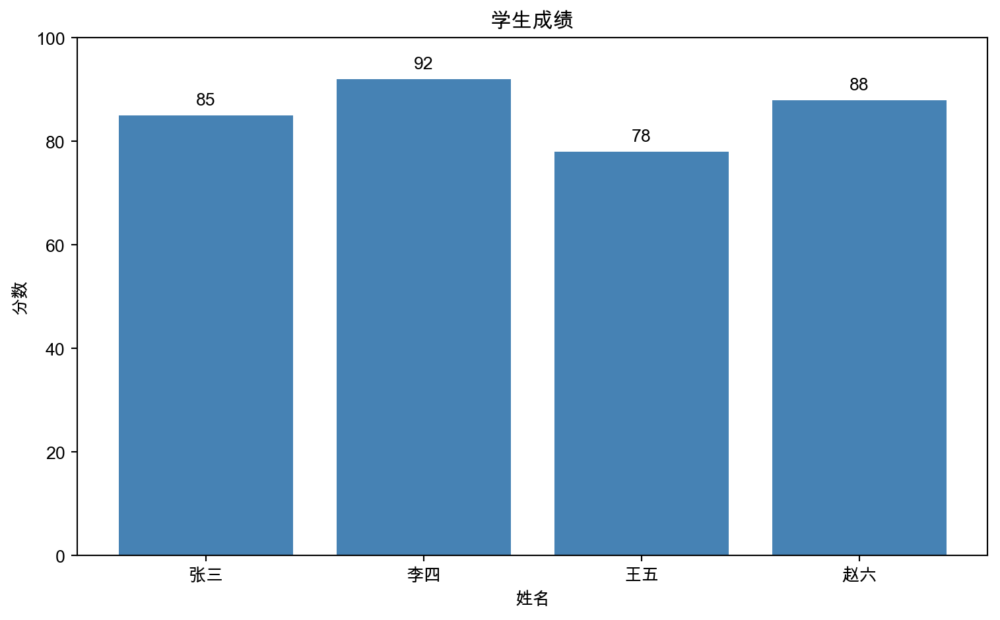

mindmap
root((Python 数据科学))
数据处理
NumPy 数值计算
Pandas 表格数据
可视化
Matplotlib 基础绑图
Seaborn 统计图表
Plotly 交互图表
机器学习
Scikit-learn
TensorFlow
PyTorch
交互环境
Jupyter Notebook
JupyterLab
8 数据科学工具链
注记本章概要
- 课时：2课时（第8周）
- 目标：认识 Python 数据科学生态，用 AI 快速上手
8.1 学习目标
完成本章后，你将能够：
- 了解 NumPy、Pandas、Matplotlib 的作用
- 用 AI 查询和生成数据处理代码
- 在 Jupyter Notebook 中进行交互式分析
8.2 数据科学工具全景
工具分工
| 工具 | 作用 | 类比 |
|---|---|---|
| NumPy | 高效数值计算 | 超级计算器 |
| Pandas | 表格数据处理 | 智能 Excel |
| Matplotlib | 基础绑图 | 画板 |
| Seaborn | 统计可视化 | 美化版画板 |
| Jupyter | 交互式编程 | 实验笔记本 |
8.3 NumPy：数值计算基础
为什么需要 NumPy？
import numpy as np
# Python 列表 vs NumPy 数组
py_list = [1, 2, 3, 4, 5]
np_array = np.array([1, 2, 3, 4, 5])
# NumPy 可以直接做向量运算
print(f"NumPy 每个元素 +10: {np_array + 10}")
print(f"NumPy 每个元素 *2: {np_array * 2}")
print(f"NumPy 每个元素的平方: {np_array ** 2}")NumPy 每个元素 +10: [11 12 13 14 15]
NumPy 每个元素 *2: [ 2 4 6 8 10]
NumPy 每个元素的平方: [ 1 4 9 16 25]常用操作
import numpy as np
# 创建数组
arr = np.array([85, 92, 78, 60, 45, 88, 72, 95])
# 统计运算
print(f"平均值: {np.mean(arr):.2f}")
print(f"标准差: {np.std(arr):.2f}")
print(f"最大值: {np.max(arr)}")
print(f"最小值: {np.min(arr)}")
print(f"中位数: {np.median(arr)}")
# 条件筛选
passed = arr[arr >= 60]
print(f"及格成绩: {passed}")平均值: 76.88
标准差: 16.10
最大值: 95
最小值: 45
中位数: 81.5
及格成绩: [85 92 78 60 88 72 95]8.4 Pandas：表格数据利器
创建 DataFrame
import pandas as pd
# 从字典创建
data = {
'姓名': ['张三', '李四', '王五', '赵六'],
'语文': [85, 92, 78, 88],
'数学': [90, 85, 82, 95],
'英语': [78, 88, 85, 92]
}
df = pd.DataFrame(data)
print(df) 姓名 语文 数学 英语
0 张三 85 90 78
1 李四 92 85 88
2 王五 78 82 85
3 赵六 88 95 92数据查看
# 基本信息
print("前两行:")
print(df.head(2))
print("\n基本统计:")
print(df.describe())
print("\n数据类型:")
print(df.dtypes)前两行:
姓名 语文 数学 英语
0 张三 85 90 78
1 李四 92 85 88
基本统计:
语文 数学 英语
count 4.000000 4.000000 4.000000
mean 85.750000 88.000000 85.750000
std 5.909033 5.715476 5.909033
min 78.000000 82.000000 78.000000
25% 83.250000 84.250000 83.250000
50% 86.500000 87.500000 86.500000
75% 89.000000 91.250000 89.000000
max 92.000000 95.000000 92.000000
数据类型:
姓名 object
语文 int64
数学 int64
英语 int64
dtype: object数据选择
flowchart LR
A["数据选择"] --> B["选列"]
A --> C["选行"]
A --> D["条件筛选"]
B --> B1["df['列名']"]
B --> B2["df[['列1', '列2']]"]
C --> C1["df.iloc[行号]"]
C --> C2["df.loc[标签]"]
D --> D1["df[df['列'] > 值]"]
# 选择单列
print("语文成绩:")
print(df['语文'])
# 选择多列
print("\n姓名和数学:")
print(df[['姓名', '数学']])
# 条件筛选
print("\n语文90分以上:")
print(df[df['语文'] >= 90])
# 添加新列
df['总分'] = df['语文'] + df['数学'] + df['英语']
df['平均分'] = df['总分'] / 3
print("\n添加总分和平均分:")
print(df)语文成绩:
0 85
1 92
2 78
3 88
Name: 语文, dtype: int64
姓名和数学:
姓名 数学
0 张三 90
1 李四 85
2 王五 82
3 赵六 95
语文90分以上:
姓名 语文 数学 英语
1 李四 92 85 88
添加总分和平均分:
姓名 语文 数学 英语 总分 平均分
0 张三 85 90 78 253 84.333333
1 李四 92 85 88 265 88.333333
2 王五 78 82 85 245 81.666667
3 赵六 88 95 92 275 91.666667读取外部数据
import pandas as pd
# 读取 CSV
df = pd.read_csv("data.csv", encoding="utf-8")
# 读取 Excel
df = pd.read_excel("data.xlsx", sheet_name="Sheet1")
# 读取 JSON
df = pd.read_json("data.json")
# 保存数据
df.to_csv("output.csv", index=False, encoding="utf-8")
df.to_excel("output.xlsx", index=False)8.5 Matplotlib：基础绑图
第一个图表
import matplotlib.pyplot as plt
# 设置中文字体
plt.rcParams['font.sans-serif'] = ['Arial Unicode MS', 'SimHei']
plt.rcParams['axes.unicode_minus'] = False
# 数据
names = ['张三', '李四', '王五', '赵六']
scores = [85, 92, 78, 88]
# 创建柱状图
plt.figure(figsize=(8, 5))
plt.bar(names, scores, color='steelblue')
plt.title('学生成绩')
plt.xlabel('姓名')
plt.ylabel('分数')
plt.ylim(0, 100)
# 在柱子上显示数值
for i, score in enumerate(scores):
plt.text(i, score + 2, str(score), ha='center')
plt.tight_layout()
plt.show()
常见图表类型
mindmap
root((图表类型))
趋势/变化
折线图 plot
比较/排名
柱状图 bar
分布
直方图 hist
箱线图 boxplot
关系
散点图 scatter
占比
饼图 pie
多子图
import matplotlib.pyplot as plt
import numpy as np
fig, axes = plt.subplots(1, 2, figsize=(10, 4))
# 左图：折线图
x = np.linspace(0, 10, 100)
axes[0].plot(x, np.sin(x), label='sin(x)')
axes[0].plot(x, np.cos(x), label='cos(x)')
axes[0].set_title('Trigonometric Functions')
axes[0].legend()
axes[0].grid(True)
# 右图：散点图
np.random.seed(42)
x = np.random.randn(50)
y = x + np.random.randn(50) * 0.5
axes[1].scatter(x, y, alpha=0.6)
axes[1].set_title('Scatter Plot')
axes[1].set_xlabel('X')
axes[1].set_ylabel('Y')
plt.tight_layout()
plt.show()
8.6 Jupyter Notebook
为什么使用 Jupyter？
flowchart LR
A["传统脚本"] --> B["写完整代码"]
B --> C["运行全部"]
C --> D["看结果"]
E["Jupyter"] --> F["写一段"]
F --> G["立即运行"]
G --> H["看结果"]
H --> F
style E fill:#e8f5e9
style F fill:#e8f5e9
style G fill:#e8f5e9
style H fill:#e8f5e9
| 特点 | 说明 |
|---|---|
| 交互式 | 边写边运行，立即看结果 |
| 可视化 | 图表直接显示在笔记本中 |
| 文档化 | 代码、文字、图表混合 |
| 可分享 | 导出为 HTML、PDF |
启动 Jupyter
# 安装
pip install jupyter
# 启动
jupyter notebook
# 或使用 JupyterLab（更现代）
pip install jupyterlab
jupyter labJupyter 中使用 AI
在 Cursor 中可以直接打开 .ipynb 文件，使用 AI 功能：
- 选中代码单元格
- 按
Cmd+L让 AI 帮你修改 - 或直接输入描述，让 AI 生成代码
8.7 让 AI 帮你做数据分析
Prompt 模板
我有一个 CSV 文件，包含以下列：
- 学号（字符串）
- 姓名（字符串）
- 语文、数学、英语（数字，0-100）
帮我写代码完成以下分析：
1. 加载数据
2. 计算每个学生的总分和平均分
3. 按总分排名
4. 统计各科的平均分
5. 绘制成绩分布直方图实战案例
import pandas as pd
import matplotlib.pyplot as plt
import numpy as np
# 模拟数据
np.random.seed(42)
n = 30
data = {
'学号': [f'2024{i:03d}' for i in range(1, n+1)],
'姓名': [f'学生{i}' for i in range(1, n+1)],
'语文': np.random.randint(50, 100, n),
'数学': np.random.randint(50, 100, n),
'英语': np.random.randint(50, 100, n)
}
df = pd.DataFrame(data)
# 计算总分和平均分
df['总分'] = df['语文'] + df['数学'] + df['英语']
df['平均分'] = df['总分'] / 3
# 创建分析图表
fig, axes = plt.subplots(2, 2, figsize=(12, 10))
# 1. 总分分布直方图
axes[0, 0].hist(df['总分'], bins=10, color='steelblue', edgecolor='white')
axes[0, 0].set_title('Score Distribution')
axes[0, 0].set_xlabel('Total Score')
axes[0, 0].set_ylabel('Count')
# 2. 各科平均分柱状图
subjects = ['语文', '数学', '英语']
means = [df[s].mean() for s in subjects]
axes[0, 1].bar(subjects, means, color=['#ff6b6b', '#4ecdc4', '#45b7d1'])
axes[0, 1].set_title('Average Score by Subject')
axes[0, 1].set_ylim(0, 100)
for i, m in enumerate(means):
axes[0, 1].text(i, m + 2, f'{m:.1f}', ha='center')
# 3. 语文vs数学散点图
axes[1, 0].scatter(df['语文'], df['数学'], alpha=0.6)
axes[1, 0].set_title('Chinese vs Math')
axes[1, 0].set_xlabel('Chinese')
axes[1, 0].set_ylabel('Math')
# 4. Top 10 学生
top10 = df.nlargest(10, '总分')
axes[1, 1].barh(top10['姓名'], top10['总分'], color='coral')
axes[1, 1].set_title('Top 10 Students')
axes[1, 1].set_xlabel('Total Score')
plt.tight_layout()
plt.show()
# 打印统计摘要
print("\n=== 统计摘要 ===")
print(f"学生人数: {len(df)}")
print(f"平均总分: {df['总分'].mean():.2f}")
print(f"最高分: {df['总分'].max()}")
print(f"最低分: {df['总分'].min()}")
=== 统计摘要 ===
学生人数: 30
平均总分: 221.93
最高分: 266
最低分: 1748.8 课后作业
开始作业 4：数据可视化仪表板
本周任务：熟悉工具链
- 安装并配置 Jupyter Notebook
- 加载示例数据集（课程提供）
- 用 Pandas 进行基础探索
- 用 Matplotlib 绑制至少 3 种图表
REPORT.md 要求： - 记录你让 AI 帮你生成的第一段数据分析代码
8.9 本章小结
- NumPy：高效数值计算，支持向量化运算
- Pandas：表格数据处理的瑞士军刀
- Matplotlib：Python 绑图的基础库
- Jupyter Notebook：交互式编程环境
- AI 辅助：描述需求，让 AI 生成分析代码
flowchart LR
A["原始数据"] --> B["Pandas 加载"]
B --> C["Pandas 处理"]
C --> D["Matplotlib 可视化"]
D --> E["分析洞察"]
下一章，我们将学习数据清洗——处理现实世界中杂乱的数据。